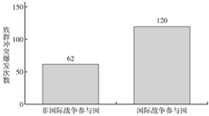
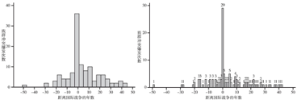
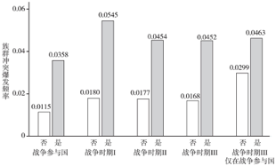

收录于合集
作者简介 王凯：复旦大学国际关系与公共事务学院博士研究生
【关键词】 族群冲突; 国家间战争; 跨国关系; 冲突管理
摘要: 现有族群冲突的国际或跨国维度研究大多倾向于将国际政治当作国内族群冲突的结果而非原因，忽视了国际政治对于族群冲突爆发的影响机制。实际上，1946—2013年期间， 国家间战争作为国际竞争和冲突的一种极端形式，与国内族群冲突在时空上存在明显的相关关系。 这是因为国家间战争首先会在战争前、战争中和战争后影响敌对国家和国内少数族群的能力和动机，之后多方间的战略互动则会进一步导致国内族群冲突的爆发。具体来说，国家间战争对族群冲突的诱发效果会通过以下 三个能够相互正向反馈的中间机制起作用: 国家间战争导致国家干预敌国族群政治的动机大幅提升 ， 国家因战争威胁而削弱了对内的控制能力，少数族群则将国家间战争视为获得外部援助和更多群体政治利益的机会。 随后的计量分析通过结合全球国家间战争和国内族群冲突数据库(1946—2013年) 验证了该理论假设，发现在控制了混杂因素的情况下，相比于和平时期，在国家间战争前、战争中和战争后国内族群冲突爆发的概率会显著上升。忽视或弱化国际政治的影响导致学界对族群冲突的理解趋于片面、归因产生偏差，不利于国际社会对族群冲突的有效管控。讨论国际战争对族群冲突的诱发机制一方面能够完善我们对族群政治的国际维度的理解，另一方面提醒我们，除了国际战争的原因，其影响同样是重要的研究议题。
现有族群冲突的国际或跨国维度研究大多倾向于将国际政治当作国内族群冲突的结果而非原因，忽视了国际政治对于族群冲突爆发的影响机制，这影响了学界对国际政治与国内族群冲突之关系的理解。相反，另一类观点则认为族群冲突和内战深受国际政治系统变迁的影响，集聚于特定区域( 弱国家) 和特定时间段( 民族国家形成时期、去殖民化时期和冷战时期) 。为了更为全面地在国际或跨国维度理解族群冲突，我们需要 探索国际因素对国内族群冲突爆发的影响机制。本文发现，国家间战争作为国际竞争和冲突的重要表现形式和战略工具，在战争前、战争中和战争后同时存在族群冲突的集聚爆发现象。 这亟待理论解释 。
实际上，从内部削弱敌人与战争本身一样古老。具体到现代国家间的竞争，第二次世界大战中日本对东亚和东南亚诸国采取了各种分化瓦解的政策，冷战后的俄罗斯支持了格鲁吉亚境内的南奥塞梯人，伊拉克战争期间美国援助了伊境内的库尔德人，伊朗则秘密在巴林鼓动什叶派抗议。上述国内族群冲突的发展显然受到国际政治的影响，但是目前的内战或者族群冲突研究却往往难以在国际或跨国维度上解释这些现象。这是因为它们通常仅仅考虑冲突从国内扩散到国外的情况，认为国内冲突会通过难民、武器和理念的跨国流动来增加相邻国家内部的族群冲突，或者通过跨国族裔的统一愿望、领导人的注意力转移战略和强国对弱国的侵略等机制引发相邻国家之间的冲突，却忽视了国际冲突对国内的影响机制。可能受到上述思维的影响，关于内战中第三方干预和调停的大部分文献主要关注外部行为体如何影响和管控正在发生或者已经结束的族群冲突或内战，第三方或国际干预导致国内冲突的机制却遭到忽略。然而，如图1 所示，现实数据表明国际冲突与国内族群冲突之间存在某种尚未被已有研究注意到的集群或相关关系。

资料来源: 笔者根据UCDP /PＲIO Armed Conflict
Dataset 和the Ethnic PowerＲelations dataset 制作
图1 总体上展现了参与国家间战争和国内族群冲突爆发的集群趋势。首先，根据本文的国家层次数据库，在1946 年至2013 年间，全球共计发生了182 次族群冲突。其次，根据国家( 共计165 个) 是否在这段时间经历过国际战争将其分为两类——国际战争参与国( 57 个) 和非国际战争参与国( 108 个) ，其中在国际战争参与国中发生过120 次族群冲突，而非国际战争参与国中只发生了62 次族群冲突，仅占前者的一半左右。因此，一个直觉性的问题就产生了——为什么会这样? 为什么经历过国际战争的国家会比没有经历过国际战争的国家更有可能发生族群冲突? 这究竟是国家本身的特点，例如弱国家或资源诅咒，还是参与国际战争的经历造成的呢? 显然，很多在国际维度考察国内冲突的文献未能注意并解释这一有趣而重要的集群现象。然而那些在其他议题上研究国际政治对国内政治影响的文章却为理解这种现象提供了启发。为了更为完整地回答上述研究问题，有必要深入和系统性地探讨国际战争影响国内族群冲突的因果机制。
本文发现， 国际战争与国内族群冲突之间的集群趋势并不仅仅显示了相关性，而且是一种因果关系，并且这种因果关系在控制了一些可以被观察到的混杂因素和考察了反向因果关系之后依然能够保持稳健。 在系统性的实证证明之外，理解这种因果关系首先要认识到国际战争及其结果对国家生存和国内政治的首要意义。国际战争对国家而言可谓至关重要，国际战争的政治及其影响绝不局限于战争进程本身，而是涵盖了战争爆发前的酝酿时期和战争以某种方式结束后重新建立秩序的再稳定时期。 因此，本文的核心解释变量不是国际战争本身，而是“国际战争时期”。 这一概念不仅涵盖国际战争从爆发到结束之间的持续过程，而且包括国际战争爆发前和结束后的两段紧邻国际战争的时间(方便起见，本文假设这两个时间段相等，并记为n年) 。如后文论述，国际战争的三个不同时段几乎都对参战国国内的族群冲突存在相似的诱发机制。
国际战争是一种影响国家所处外部环境的关键性事件， 国际战争时期可以说是国家间冲突/竞争最为激烈和暴力的时段。 此时，国家利用一切战略和手段来谋求胜利的动机最为强烈，因此 能够深刻改变所有相关战略行为体( 敌对国家和国内少数族群) 的既有能力、动机及互动方式 ，在这一动荡、未知和机会主义盛行的时期，国内族群冲突更容易爆发。
但是，国际战争时期并非一定会导致国内族群冲突的发生， 以下三个具体中间机制及互动会决定族群冲突是否最终爆发: 首先， 国际战争会导致国家拥有更多利益或动机去采取各种方式支持和动员敌对国家的少数族群。 其次， 国际战争时期，国家的对内控制能力受限，且会持续担忧其境内的少数族群与敌对国家勾结，进而导致国家对少数族群的政策趋于强硬和控制。 最后， 在拥有外部敌对国家的潜在支持和母国被削弱的情况下，少数族群往往更愿意利用自身的优势地位寻求更多的族群利益，如不同程度的自治要求。需要强调的是，上述三个机制存在非常明显而致命的正向反馈效果，导致国际战争期间的族群冲突更容易爆发。我们可以用更加简洁的语言来表达上述机制的互动结果: 当A国与B国的国家间战争爆发于T0年、结束于T1年( T0≤ T1) 时，理论预期为在T0-n≤T≤T1+n 的时间段内，A 国和B 国国内族群冲突发生的概率会大幅增加 。
为了从理论和实证上阐释国际战争对国内族群冲突的影响机制，下文 首先描述了第二次世界大战以来全球族群冲突与国际战争的群集和相关趋势 ，然后在与既有文献的比较分析中给出了理解这一趋势的理论框架。 随后本文结合1946—2013 年的国际战争数据(UCDP /PＲIO) 和族群冲突数据(EPＲ/Growup)，使用多元逻辑斯蒂回归(logistic regression) 证明了二战以来的实证证据符合本文的理论预期，之后又讨论了模型的稳健性和内生性问题。结论则指出了本研究的意义、不足和该议题未来研究的若干方向。
** 二战以来全球族群冲突与国际战争的群集和相关趋势**
国际战争对国内族群冲突的影响基本上遭到学界忽视，因此有必要先从实证上表明这两个政治科学的重要现象之间存在某种相互关系。为了说明两者之间的群集趋势，本文综合了乌普萨拉大学和奥斯陆和平研究中心共同收集发布的国际战争数据(UCDP /PＲIO Armed Conflict Dataset，简称ACD) 以及瑞士理工大学拉斯—埃里克·塞德曼( Lars-Erik Cederman) 团队建立的“族群权力关系”数据库( Ethnic Power Ｒelations，简称EPＲ) 。ACD 数据库包含了二战以来的国内和国际战争数据，将最低伤亡人数定义为25 人，数据内容包含战争主体、爆发及持续时间、战争类型等。EPＲ 数据库采用同样的伤亡标准来定义国内族群冲突，并将这些冲突与具体的国内族群联系起来，是目前族群冲突中使用最为广泛的数据库。通过将这两个数据库整合起来，本文构建了一个1946—2013 年国家—年份层次的数据库，包含主要解释变量“是否处于国际战争时期”和被解释变量“国内族群冲突的爆发”，本文中各类描述和统计分析都是基于此数据库。
根据图1发现，经历过国际战争的国家更容易爆发族群冲突。 虽然这样的描述性结果在直觉上给出了参与国际战争和爆发国内族群冲突的集群关系，但是 依然需要了解族群冲突是否发生在前文所定义的国际战争时期。 如果答案是否定的，即国内族群冲突与国际战争在时间上相距遥远，则国际战争与国内族群冲突之间潜在的因果关系就很可能是虚假的。图2 和图3 以描述性的趋势分析回应了上述问题。

图2 国际战争参与国中爆发的族群冲突 图3 国际战争参与国中爆发的族群冲突(细化)
资料来源: 笔者根据UCDP /PＲIO Armed Conflict Dataset 和the Ethnic Power Ｒelations dataset 制作
图2 和图3 展现了1946—2013 年所有国际战争参与国国内族群冲突的爆发与母国最近一次参与国际战争的时间间隔(年数) 。比如，假设A 国分别在1970—1971 年和1980—1985 年间各参与了一次国际战争，而A 国分别在1968 年、1970 年、1977 年和1990 年发生了四次族群冲突，则它们距离国际战争的时间间隔分别为-2、0、-3 和5。此外，由于国际战争常会持续若干年，而本文的测量办法默认所有在战争持续过程中的族群冲突距离战争的时间间隔都是0，因此0点上的族群冲突案例会远大于x 轴上的其他点。 回到图2，可以发现，大部分族群冲突发生在紧邻国际战争的前后和战争中时段。 大致在国际战争爆发的10 年之前和结束的10 年后，族群冲突爆发次数会大幅下降。图3 是在图2 基础上的进一步细化，使用直方图来显示具体到距离国际战争每一年的族群冲突发生状况。在总计120 次族群冲突爆发中，29 次( 24．2%) 发生在国际战争的过程中( x 轴上的0 点) ，另外分别有18 次( 15%) 和26 次( 21．7%) 发生在国际战争爆发前和结束后的10 年内。将上述数字加总起来，共计有73 次( 60．9%) 发生在国际战争中及前后10 年之内。 这些数据初步表明，国际战争时期容易出现族群冲突。

图4 不同组别中族群冲突的爆发频率
资料来源: 笔者根据UCDP /PＲIO Armed Conflict Dataset
和the Ethnic Power Ｒelations dataset制作
为了清晰表明 国际战争时期对族群冲突的触发作用 ，图4 分别比较了以下五组类型中两个组别之间族群冲突的年发生频率: 国际战争参与国/非国际战争参与国，国际战争时期I(涵盖距离战争前后各1年的时段，n= 1)/非国际战争时期I，国际战争时期II(n=3)/非国际战争时期II，国际战争时期III(n=5) /非国际战争时期III 以及仅在国际战争参与国的样本中比较国际战争时期III(n=5) /非国际战争时期III。如图4 所示，国际战争参与国的年族群冲突爆发频率(0.0358)三倍于没有经历过国际战争的国家(0.0115)。此外，无论我们使用国际战争前后1年、3年还是5年的测量方法来定义国际战争时期，均能够将族群冲突的年爆发频率从和平时期的0.016—0.018 大幅提升至0.045—0.054，提升幅度在1.6—2倍左右。最后，如果将样本进一步缩小到那些经历过国际战争的国家，会发现国际战争时期(III) 的族群冲突爆发频率(0.463)依然要比和平时期(0.299)高50%左右。总体来看，图4进一步验证了图3 显示的经验趋势，下文将联系理论讨论这种趋势的形成原因。
** 文献回顾与理论框架** ****
(一) 文献回顾
国际或跨国维度的族群冲突研究倾向于将国际政治当作结果变量而非原因，外部干预领域的文献则往往假定国际干预发生于族群冲突爆发后，忽视了国际政治因素对于族群冲突爆发的影响。本文认为，为了更为全面地在国际或跨国维度理解族群冲突， 依然需要将国际政治因素引入族群冲突的研究中。 只有这样才能够解释国际战争前、战争中和战争后所存在的族群冲突爆发的集聚现象。虽然国际政治因素的影响无处不在，但是 冷战结束以来在国际或跨国维度对族群冲突的研究却似乎存在一种偏好，即往往将国际政治作为国内族群冲突爆发的结果而非原因。 这些研究的问题往往是为什么族群冲突会从一国扩散到另一国，引起另一国的国内族群冲突或者这两国间的冲突。当然，这种偏好本身无可厚非，而且实际上也源于以下两个因素的影响: 其一，这些研究的实证视野往往聚焦在冷战后，而这一时期整体国际环境稳定，国际战争爆发的数量有限。同时，全球化日益显著，国内冲突往往根植于国家内部的不稳定和历史原因。因此，这类冲突往往被认为外生于国际政治并通过跨国界的流动而影响国家间关系。其二，这类研究符合且受益于学术研究中的微观化趋势。
这类研究大致可以分为三类。 第一类研究强调战略性， 认为面临严重内部斗争和分离问题的国家往往会故意制造外部敌人并发动国际战争，因为这能够带来内部的和平和凝聚力。这种逻辑可以追溯到让·布丹( Jean Bodin) 在其五百年前的经典著作《国家六论》( Six Books of the Commonwealth) 中的观点: “最好的保存国家( 的完整) 并避免煽动、叛乱和内战的方式是使各个主体保持一种和睦的关系，而为了达到这个目的，需要找到一个共同的敌人。”这种类似于转移注意力的战略逻辑(diversionary logic) 与本文的国际竞争逻辑存在竞争关系，到底哪种理论能更好地解释国内和国际冲突的联系是一个实证问题。不过从两者的实证证据来看，前者的实际解释力较弱。
首先，根据亚瑟·斯坦(Arthur A．Stein) 等学者对各种国际战争理论的系统性检验发现: 转移注意力的理论假说缺乏实证证据，例如对外战争反而降低了美国的国内凝聚力，没有证据表明这一考虑会对国际战争的爆发产生实质影响。其次，如果国家确实希望通过国际战争来解决国内分歧并且这一战略确实有效，那么应当能够观察到一种趋势，即国际战争之后国内冲突会显著减少。然而，如上文和图3 所示，国际战争之后往往会迎来国内族群冲突的高峰。
第二类研究关注的则是国内冲突的客观和非意图性的扩散效应 ，它们往往会使用内战或族群冲突的国际或跨国维度之类的标签，仅仅考察冲突从国内扩散到国外或国家间的情况。其主张一国的族群冲突会通过诸如难民、武器、理念的跨国流动和同一族群的跨国联系引发相邻国家内部的族群冲突，或者通过跨国族裔的统一愿望、领导人转移注意力的战略和强国侵略弱国等机制引发相邻国家之间的冲突。这类研究相对忽略了国际因素对国内族群冲突的影响机制。后文将在实证分析的基础上着重讨论这些研究是否构成对本文理论的内生性挑战。
可能是因为受到上述思维的影响， 第三类研究侧重于讨论外部的第三方干预和内战调停 ，往往关注外部行为体如何预防国内族群冲突的爆发( conflict prevention) ，如何影响、管控和结束已经发生和扩散的冲突( conflict resolution) ，或者如何进行战后重建(post- conflict reconstruction) 。其通常忽视了一个简单的道理，即这些国内冲突之所以会发生是因为冲突各方与外部第三者往往存在千丝万缕的关系。
针对上述文献，本文强调两点: 首先，以上三类研究取向确实在实证和理论上为族群冲突研究做出了贡献。国内族群冲突确实可能会影响邻国政治和双边关系，如塞浦路斯国内的族裔矛盾就直接影响了希腊和土耳其的双边关系。其次，如果仅仅因为族群冲突发生在国际冲突之前，就认为前者是后者的原因则会犯依据时间先后简单归因的错误，导致忽略了现实政治中的真实实践。例如，二战全面爆发前捷克斯洛伐克人与境内苏台德区的德意志族群之间的冲突不断上升直至分裂，随后捷克斯洛伐克被德国武力占领。在这两个事件中，后者更多是前者的原因而非结果。总体来说， 本文所描绘的反向因果机制并非意在否定上述研究， 而是在此基础上强调国际战争对国内族群政治的影响， 进一步完善对族群政治的国际—国内互动的理解。因此，本文提出的理论与上述研究在解释社会现象的意义上既竞争又互补。
在上述关于族群冲突的国际文献之外，尽管尚未有研究完全将讨论限定在国际战争对国内族群冲突的影响机制上，但是不乏相关的重要研究。首先，国际政治对国内政治的影响深远，具体到国内冲突的研究议题中，历史上民族国家的形成及其扩散往往会伴随着新旧势力和理念之间的激烈碰撞和大量随之而来的国内冲突( 内战和族群冲突) 。其次，竞争国家的存在、地区制度环境和经贸关系等因素都会通过外部干预来影响国内( 族群) 冲突。
如果进一步缩小相关文献的范畴，关于国际战争/冲突如何影响国内冲突的研究实际可追溯到20 世纪上半叶。早在1937 年，著名社会学家皮特林·索罗金(Pitirim A．Sorokin) 就较为系统地分析了从公元前5 世纪到公元20 世纪初的古希腊、古罗马和俄罗斯等多个欧洲国家的国际—国内冲突的关系，指出国内冲突在国家间战争的前、中、后期均有小幅增加。但是经过更加仔细的研究，他又认为这两者之间实际上相互独立。50 多年前，一批国际政治学者也在合作出版的《国内冲突的国际层面》中讨论了国际—国内冲突的互动，明确指出了国际政治对国内族群冲突的重要影响，但是这一研究方向之后并未得到充分重视。在该书中，乔治·莫德尔斯基( George Modelski) 提出，一方面，内战影响了国际体系; 另一方面，国际体系也影响内战。此外，外部变量是内战爆发、持续和结束的主要决定因素。安德鲁· 斯科特(Andrew M．Scott) 指出，无论是通过资助他国的反对派媒体还是直接向反对派武装提供武器，煽动他国的内部暴力是“国家间冷战”的一种常见战略。虽然上述文献并未直接将国际战争与国内族群冲突联系起来，也未提出系统性的证据，但仍然提供了很多理解该问题的宏观和微观逻辑。
1980 年，迈克尔·斯托尔(Michael Stohl) 撰写了一篇关于国际冲突与国内冲突相互影响的文献回顾。 该文分析了学界在之前40 年中(特别是1963—1980 年) 对此问题的实证研究，其发现: (1)这些研究基本都是“无理论的(atheoretical) ”; (2)结论五花八门，包括国际冲突和国内冲突不相关、正相关、条件性正相关和负相关; (3)国际冲突与国内冲突之间不存在适用所有时空的清晰关系。对此，斯托尔开出了两剂药方: 其一，从理论上解释清楚何种国内冲突受到何种国际冲突的影响。 其二，根据理论来确定合理的研究设计，包括变量、分析单位、时间延后和分析方法的选择 。此后特别是2000年以来，在现有的阅读范围内尚未存在直接讨论国际战争对国内族群冲突之影响的文章，但是仍然有少数从外部干预的角度讨论国际冲突/竞争对国内冲突爆发的影响以及从长期竞争(enduring rivals) 的角度来研究国内冲突的研究。它们的结论存在不小的差异，后文将会讨论这些研究对本文理论的价值。
(二) 理论框架
斯托尔的观点对本文具有相当的指导意义，纷繁复杂的国际—国内互动要求相关研究考虑特定的国际和国内冲突之间的关系，例如本文试图揭示的国际战争和国内族群冲突之间的因果关系。为了理解这样的关系，需要清楚明确又符合直觉的理论框架，并使用它来指导和框定实证研究。本文的研究议题要求将关注点放在一国的竞争国和国内少数族群之间的互动上。
克里斯托弗·米切尔(Christopher Ｒ．Mitchell) 于1970 年发表在《国际研究季刊》上的题为《国内冲突和第三方介入》的文章是一篇重要却被忽视的文献，同时也是 最早一批提出理解外部干预问题的理论框架的研究。 该文研究了 第三方对既有国内冲突的干预，指出研究这类问题需要考虑至少四个层面的因素 : 一是导致动乱国家容易产生内部冲突或外部干预的因素; 二是导致第三方干预国愿意干涉或者在决策层次能够通过干涉决定的因素; 三是导致国内反对派群体和第三方干预国家产生联系的因素; 四是国际体系中影响国内冲突发生和第三方干预的因素 。这篇40 多年前的文章几乎列举了解释国际—国内互动所需要考虑的所有因素，之后的研究并未能超越这一分析框架，更多的只是考虑其中部分层面的若干因素的影响。当然，简单的因素罗列是行不通的，研究者需要关注因素的相互作用、因素和因果机制之间的互动和社会事实的复杂性。在上述研究的基础上，为了解释国际战争对国内族群冲突的影响， 本文认为需要深入到国家和群体层次，并考察三个主要行为体——母国、敌对国和国内少数族群之间的互动 ( 如图5所示) 。
图5 行为体分析框架
资料来源: 笔者自制
以米切尔的四分法作为参照，本文的 主要解释变量 (国际战争时期) 相当于国际体系大类下的一个重要因素，因为国际战争是处于无政府状态的国际体系的重要特征。随后，国际战争期间可以通过影响 母国、敌对国和少数族群 这三个行为体的能力和动机来影响它们的战略及互动，最终导致更加频繁的国内族群冲突。具体来说，为了理解国际战争对国内族群冲突的诱发效果，需要厘清国际战争带来的三个互动机制(如图6 所示) 。
国际战争期间，一国干预敌对国国内政治的动机最为强烈，支持和鼓动敌对国少数族群的分离主义是战时的重要策略。从历史上看，国家主权从来都不是绝对的。
图6 国际战争引发国内族群冲突的因果机制图
资料来源: 笔者自制。
国家领导人的行事动机首先是要维护和扩展自身的权力，而非维护包括主权原则在内的所谓国际准则。因此，国家主权原则从来就不是限制外部干预的充分条件。国家干预的目的可能是工具性的，例如为了经济收益、政治利益或国际影响力等; 也可能是情绪性的，例如出于族裔观念、宗教或意识形态。当国家面临外部竞争国，且后者存在国内冲突和暴力问题时，国家为自身利益干预敌对国国内政治的动机则更为强烈。关于长期竞争国的研究证明了长期竞争国的存在会增加国家援助竞争国国内反叛群体的概率。本文将上述逻辑再往前推动一步， 认为无论相比于和平时段还是一般竞争时段，国际战争时期都是国家干预敌对国国内政治、支持其国内反对派组织动机最为强烈的时段。 首先，在国际战争时期，无论对国家还是国内领导人来说，首要战略目标都是生存和获胜，失败的代价是难以承受的。其次，在敌国国内的诸多潜在资助对象中，不满国内政治经济制度安排的少数族群是非常重要的合作对象，因为后者往往拥有一定程度的聚集地且容易动员，同时受到民族自决原则的保护。因此，本文认为，国际战争期间 导致国家最为渴望通过支持敌对国国内既有的族群反叛组织或者鼓动尚未与敌对国发生冲突但是仍然存在不满和自治抱负的少数族群，来达到削弱对手战争能力的目的 。
国际战争期间国家的对内控制能力下降，且会产生采取更为严格和更具强制性的对内管控措施的动机。 此时，如果有明确的外部干预信号，政府可能对被敌对国援助的少数族群采取镇压政策，进而导致冲突的螺旋上升。潜在和进行中的国际战争导致国家不得不将大部分战略资源投入国际层面。同时作为一个战略行为体，国家也会对敌对国和自身国内少数族群联系和共谋的可能性严重忧虑。因此，在内忧外患之际，国家往往会采取更为集权、更为严厉的国内控制政策。作为与主要族群存在身份认同差别的少数族群，则往往是这类政策的主要针对目标。如果有一定的证据表明反对派组织接受了敌对国家的援助，国家往往会对它们所代表的少数族群采取镇压甚至屠杀政策。这种镇压则会反过来导致少数族群更强烈的不满和反抗，极易产生所谓的冲突螺旋。国际战争期间是国内少数族群进行政治动员、获取更多群体利益的重要机遇期。可期的外部援助不仅能够增强少数族群的动员能力，还能推动后者的诉求和动机更趋激进。此时，不仅是那些与敌对国主要族群属于同一族裔的少数群体，而且任何对自身地位不满的国内少数群体都可能与敌对国因彼此利益的吻合而产生或增强联系。这是一种非常现实主义的政治逻辑。对于少数族群来说，国际战争时期是获得更多群体利益( 政治参与权力、自治乃至独立) 的黄金时间。一旦获得了外部援助，少数族群的动员或物质性能力将得到提升，这将使其在与母国中央政府的谈判过程中获得更多砝码; 同时，在能力提升后，少数族群的公开政治诉求往往会变得更加激进，会从要求平等权利向地区自治甚至独立的方向发展，以期从中央政府获得更多的好处，甚至会为此主动采取针对中央政府和普通民众的进攻或掠夺政策。关于长期竞争国的研究表明，竞争国家的存在会使得国内反叛群体意识到外部援助是可期的。因此无论实际外部援助是否到来，都会延长国内冲突的持续时间。 本文认为，国际战争的前、中、后期都会导致少数族群的能力和动机发生巨大变化，更加容易引发国内族群冲突。
总体来看，国际战争作为国际体系中的极端暴力因素，能够通过影响母国、敌对国和少数族群三者的能力和动机来塑造三方的互动，这种互动的结果往往是带来比和平时期更多的国内族群冲突。此外，关于上述理论还有若干需要强调之处。
首先，上述三个机制都存在非常明显的正向反馈效果。 如国外援助会增强国内少数族群的离心能力和动机，母国的忧虑和中央政府的强硬控制政策往往会导致国内少数族群更强烈的不满和离心趋势，少数族群的自治要求和接受敌国的援助则会增强母国的不满并招致更多强制措施等。这些反馈效应导致国际战争期间更容易爆发族群冲突。
其次，国际战争前、中、后各时期对族群冲突的影响大致相同，唯有发生在战胜国的国内族群冲突可能存在不同机制。 在战争发生前的准备期和战争的持续过程中，敌国的潜在干预、少数族群的离心倾向和母国的忧虑会一直存在，因此互动模式大致相同。如果战争持续较久，形成消耗战，那么少数族群的不满很可能上升，冲突的可能性就更高。战争结束后的短时间内则依然是族群冲突的高发期。战争结束的方式可以粗略地分为战败、停战和战胜三种。在前两种情况下，上述互动模式依然会在母国占据主导地位，因为敌对国家的楔子战略和少数族群的离心依然存在; 在母国取得胜利的情况下，母国中央政府对曾经与敌国“暧昧”的少数族群的惩罚或压制就可能成为另一种占据主导地位的族群冲突诱发机制。由于篇幅原因，本文暂时不讨论这一种冲突爆发机制。
最后，本文的理论存在一些明显的限定条件和隐含假设。 例如，国家内部必须至少存在一定数量的少数族群; 敌对国家应该有一定的能力去援助或影响另一国国内的少数族群。总体来说，本文认为国际战争期间可以通过影响母国、竞争国和国内少数族群这三类行为体的能力和动机来影响三者的战略行为及互动，最终导致更加频繁的国内族群冲突。但是本文目前并不准备用实证证明三个互动机制，而是希望从总体上验证上述国际战争和国内族群冲突的因果关系。因此，本文的下一部分将验证如下核心假说，即相比和平时期，国际战争时期能够大幅增加参战国国内族群冲突的爆发概率。
** 数据、方法和分析结果** ****
(一) 数据
作为因变量的族群冲突往往发生在一国的中央政府和国内少数族群之间，并且本文认为属于国家层次的国际战争时期这个自变量能够在宏观上改变国内的政治环境。因此，我们将 数据分析的观察单位放在国家—年份(country-year) 层次。由于因变量(族群冲突发生与否) 是二分变量，本文使用了逻辑斯蒂回归进行分析。 回归模型如下: 方程(1) 为包含控制变量的主要模型(即后文表1 中的模型2 到模型5) ，其中P 为族群冲突发生概率，c 为常数项，War是本文的主要解释变量——国际战争时期，X’为本文控制的由一系列国家层次因素组成的向量，ε 为误差项; 方程(2) 只适用于模型6，大部分与方程(1) 相同，只有Spline1 和Spline2 为使用“自然三次样条”方法对族群冲突距离国际战争的时间距离(年份) 进行非线性处理得到的多项式形式。 下文将分别介绍本文使用的因变量、自变量和各个控制变量的数据来源和测量方式。
Logit( P) = c + αWarit + X’β + εit (1)
Logit(P)=c+α1Spline1i+α2Spline2it+X’β+εit (2)
1．因变量
前文中已经提到过，本文使用“族群权力关系”数据库(EPＲ) 来确定全世界范围内的族群。该团队在2012 年将EPＲ 与乌普萨拉大学的国内冲突数据库联系起来，建立了国内冲突中的族群冲突案例库(ACD2EPＲ 数据库) 。本文使用了该数据库2014 年版本所收集的族群冲突信息，并 将满足下列条件的国内冲突定义为族群冲突 : 首先 ，存在直接或非直接(如组织名称)的证据表明该冲突中的反叛组织(rebel group) 是排外性地为了某个具体族群而战斗。 其次 ，该反叛组织可以在其所宣称的族群中征募兵源。如此一来，就得到了243 次群体—国家—年份层次的族群冲突爆发案例。然后进一步将这些族群冲突加总成国家—年份层次，最终得到作为因变量的182 次冲突爆发案例。
2．自变量
由于因变量源自乌普萨拉大学和奥斯陆和平研究中心的武装冲突数据库( UCDP /PＲIO ACD) ，且该数据库以 至少25人的战争相关伤亡来定义冲突和战争 ，为了能够统一标准，本文没有使用以1000 人的伤亡标准来定义战争的数据库——“战争相关指数( Correlates of War) ”，而是继续使用武装冲突数据库ACD，并 用其中的“第二类冲突”来定义国际战争 。如前文所述， 本文的核心自变量不是国际战争本身 ， 而是“国际战争时期”(T年) ，后者不仅仅涵盖国际战争从爆发(T0年) 到结束(T1年) 之间的持续过程，而且包括国际战争爆发前和结束后的两段紧邻的时间( 本文假设这两个时间段相等，并记为n年) 。也就是说，国际战争时期可以表示为“ T0－n≤T≤T1+n ”的时间段。因此，测量国际战争时期的关键是测量n。
本文采用了两种方法来测量n。第一，如前文图4所示，本文采用了比较主观的方法分别将n定义为1年、3年和5年。相应来说， 国际战争时期就存在三种测量方式 :I(涵盖距离战争前后各1年的时段，n=1) ，II(涵盖距离战争前后各3年的时段，n=3) 和III( 涵盖距离战争前后各5 年的时段，n= 5) 。本文将国际战争时期III作为主要的测量方法，将国际战争时期I和II作为稳健性检验。总体来说，这种测量方法较为简洁，使得自变量成为一个二分的0/1变量，但是存在一定的主观随意性。
第二，由于单纯根据主观判断来测量国际战争时期的方法不太令人满意，因此本文还测量了1946—2013 年所有国际战争参与国的族群冲突与其母国最近一次参与国际战争的时间间隔(年数) 。如果族群冲突发生在最近一次国际战争爆发之前的第n 年，则自变量取值为-n; 如果族群冲突发生在国际战争期间，则自变量取值为0; 如果族群冲突发生在国际战争结束之后的第n年，则自变量取值为n(如图2 和图3所示) 。第二种方法保留了所有的时间信息，使得自变量成为数值型变量。但是这种测量只适用于那些经历过国际战争的国家，排除了接近一半的案例。另外，这种测量要求必须使用非线性方法来模拟自变量，理论上自变量的绝对值越小时，族群冲突爆发的概率越大。为此，我们采用了安德烈亚斯·威默(Andreas Wimmer) 和布赖恩·米恩(Brian Min)的方法，使用“自然三次样条”法(natural cubic splines)来模拟与国际战争的时间距离对族群冲突的非线性关系。使用这种方法可以测试距离国际战争的时间与族群冲突的爆发概率之间是否存在类似倒U 型的关系。
3．控制变量
根据对既有理论的梳理，为了排除虚假关系的可能性，本文控制了那些可能同时会影响 自变量和因变量的5 个混杂因素——即建国遗产(birth legacy) 、邻国数量、民主程度、长期竞争国数量和人均国内生产总 值。
(1) 现代国家建立时的遗产被认为能够影响国家之后的对内和对外战争行为。道格拉斯·莱姆基(Douglas Lemke) 和杰夫·卡特(Jeff Carter) 认为依靠自身努力击败外部霸权建国的国家会拥有正面遗产，而那些被殖民者或帝国遗弃的新国家在独立后则缺乏必要的国家能力。根据建国时的不同情况，他们将所有国家的建国遗产从最负面到最正面分为1—6级，并指出具有越高正面遗产的国家越可能参与国内外战争并胜利。
(2) 邻国的数量在很大程度上决定了国家所处的地区战略环境。邻国数量越多，国家面临的战略威胁就越多，国际和国内冲突的可能性则会增高。
(3) 民主和平论既有国际版本(国家间的民主和平假说) 也有国内版本(民主国家的国内和平假说) 。虽然学界对民主与和平的关系多有不同意见，本文仍然使用“政体数据库”中的民主程度作为控制变量。
(4) 长期竞争国的数量是诱发国家间战争的重要因素。在国内冲突中，长期竞争国的存在会增加国内反叛群体得到援助的概率，反叛组织的受援预期也会延长内战的持续时间。
(5) 人均国内生产总值是国内冲突研究中一个相对稳健的预测指标，高人均国内生产总值往往与国内冲突负相关。在国际冲突中，这样的关系似乎也同样存在。为了控制上一次族群冲突对之后爆发族群冲突的概率的影响，我们控制了距离上次族群冲突时间的一次方、平方和立方。
(二) 分析结果
本文使用了不同的估计方法和对主要自变量的不同测量方法，并逐步控制了一些混杂因素，以验证本文的核心假设。具体的回归结果如表1所示。总体来说，所有的模型都在一定程度上证明了本文的核心假设。模型1 是最基础的模型，仅包含自变量(以国际战争前后5年来定义国际战争时期) 与距离上一次族群冲突的时间。该模型显示， 与理论预期一致，国际战争时期对族群冲突具有显著的正向相关关系。 根据模型1 进一步计算自变量的平均边际效应(average marginal effects) ，国际战争时期能够将族群冲突的发生概率由1．7%提升到3．7%，增幅约118%。
模型2是本文的主要模型，控制了我们从文献中发掘出的可能同时影响自变量和因变量的5 个混杂因素和时间因素。 结果显示，相比模型1，自变量的回归系数略有减少且其标准误略有增大，但是自变量和因变量的正相关关系依然稳健且显著(p＜0．05) 。再根据此模型来重新计算国际战争的平均边际效应: 国际战争时期导致族群冲突的爆发概率由1．6%增至2．8%，提升幅度达到75%。再来看模型2 中所放入的控制变量，仅邻国数量在统计上显著，且与因变量正相关。 这表明邻国数量越多，族群冲突发生的概率越大，这个结果也基本符合冲突学研究的传统预期。 民主程度与因变量正相关，但系数绝对值很小且在模型中并不显著，这与近年一些“元分析”研究的结果接近。例如杰弗里·狄克逊(Jeffrey Dixon) 就发现无论采取何种民主测量指标，民主和冲突的关系依然众说纷纭、未有定论。人均国内生产总值能够降低冲突的发生频率，但在统计上不显著。这也符合狄克逊的研究结论，即既有定量研究中的人均国内生产总值在大部分情况下与冲突负相关，但另有相当一部分研究发现二者之间不存在显著关系。建国遗产在模型2 和其他模型中都接近显著，且与因变量一直保持负相关关系，与概念提出者的预测相反。这可能是由于因变量(族群冲突不同于原作者所定义的内战) 和时空的差异(本文关注二战后，而原作者分析的是1816—2002年) 。值得注意的是，长期竞争国数量的回归系数的方向虽然与本文的直觉相符，但是在统计上很不显著，这一结果也和前文中竞争国对母国国内政治影响的研究相符。虽然竞争国的存在能够有利于国内少数族群获得援助和延续冲突，但是并不能直接影响族群冲突的发生。上述国家层次的控制变量并不能有效解释冲突的发生，这表明进一步的研究可能需要将分析降低到族群层次。
模型3使用了稀有事件罗杰斯特回归模型(rare event logit model) 来避免一般回归在估计小概率事件时产生的误差。其结果与模型2 十分接近，说明模型2的估计是稳健的。模型4和模型5稍微修改了自变量的测量方式，分别以国际战争前后3年和1年来定义国际战争时期，其结果总体上与模型2保持一致。模型4中自变量的回归系数与模型2几乎没有差别，模型5中的回归系数相对而言有所增大，这可能说明 距离国际战争的时间越近，越容易发生族群冲突。
模型6 试图使用“自然三次样条”方法来模拟距离国际战争的时间远近对族群冲突的非线性关系，其中样条1的回归系数显著，但是样条2不显著。为了更好地理解模型6，本文根据该模型绘制了在距离国际战争不同时间长度时族群冲突的预测爆发概率(图7) 以及距离国际战争的时间长度对族群冲突爆发的边际效应(图8) 。 图7 验证了本文的部分假设，即在时间上越接近国际战争，族群冲突的发生概率就越高，并在国际战争时期达到顶峰。 但是，图7还显示， 族群冲突的概率在国际战争结束之后的很长一段时间依然会保持较高水平。 本文认为，这是因为如前文所述国际战争结束之后的国内冲突会更为复杂，还需要其他的研究来进一步厘清其发生规律。另外，值得强调的是图7 并未包含置信区间，之所以这么做是因为模型6只是在总体上探索并呈现国际战争与族群冲突的非线性关系。实际上，由于模型6的样条2不够显著，图7上X 轴0点右边的趋势过于离散，在统计上并不可靠。图8同样不包含置信区间，存在与图7类似的统计显著问题。但是图8清楚显示了类似倒U型的曲线，这表明距离国际战争的时间越短，国际战争对族群冲突爆发概率的影响就越大。
图7 距离国际战争的年份与族群冲突的边际效应 图8 距离国际战争的年份对族群冲突概率的变化
表1 主要回归结果
因变量:
族群冲突爆发
|
模型 1 n= 5 年
|
模型 2 n= 5 年
|
模型 3
( 稀有事件回归) n= 5 年
|
模型 4 n= 3 年
|
模型 5 n= 1 年
|
模型 6
—|—|—|—|—|—|—
国际战争时期
|
0.776*** (0.230)
|
0.587** (0.270)
|
0.586*** (0.249)
|
0.537*(0.307)
|
0.778**(0.332)
|
样条( Spline)1
|
|
|
|
|
|
0.027* (0.015)
样条( Spline)2
|
|
|
|
|
|
-0.0230 (0.034)
建国遗产
|
|
-0.1130 (0.081)
|
-0.109*(0.058)
|
-0.1110 (0.080)
|
-0.1040 (0.078)
|
-0.1610 (0.104)
邻国数量
|
|
0.079**(0.032)
|
0.093***(0.030)
|
0.081**(0.033)
|
0.076**(0.032)
|
0.054
(0.039)
长期竞争国数量
|
|
0.038
(0．111)
|
0.081
(0．104)
|
0.050
(0．108)
|
0．016
(0．113)
|
0．015
(0.116)
民主程度
|
|
0．004
(0．026)
|
-0．0020 (0．025)
|
0．003
(0．026)
|
0．000
(0．026)
|
0．059*
(0.034)
人均国内生产总值a
|
|
-0.1260 (0.148)
|
-0.1160 (0.086)
|
-0.1340 (0.150)
|
-0.1250 ( 0．150)
|
-0.0440 (0.203)
和平年数
|
-0.268***(0.040)
|
-0.335***(0.049)
|
-0.299***(0.048)
|
-0.337***(0.050)
|
-0.333***(0.050)
|
-0.252***(0.062)
和平年数2
|
0.010*** (0.002 )
|
0.014***( 0.028)
|
0.012*** (0.003)
|
0.014*** (0.003)
|
0.014*** (0.003)
|
0.011***(0.004)
和平年数3
|
-0.000***(0.000)
|
-0.000***(0.000)
|
-0.000***(0.000)
|
-0.000***(0.000)
|
-0.000***(0.000)
|
-0.000***(0.000)
常数项
|
-2.535***(0.239)
|
-1.679*
(1.055)
|
-1.977＊ (0.570)
|
-1.601＊ (1.078)
|
-1.648＊ (1.085)
|
-1.679*(1.362)
观测值数量
|
8752
|
6138
|
6285
|
6138
|
6138
|
2312
χ2
|
116．82
|
125．55
|
118．23
|
124．21
|
127．50
|
73．30
PseudoＲ2
|
0．091
|
0．103
|
N/A
|
0．101
|
0．104
|
0．104
Log likelihood
|
-804.195
|
-512.762
|
-487.037
|
-513.472
|
-512.063
|
-302.644
资料来源: 笔者整合多个数据库后自制。
注: 括号中为标准误，且置于( cluster) 国家层次。稀有事件回归除外，因无法操作。a 取自然对数，且延后一年( 稀有事件回归除外) ; * p＜0．10，＊＊p＜0．05，＊＊＊p＜0．01。
讨论
(一) 模型的稳健性检验
除去不能观测到的潜在混杂因素对模型有效性的影响之外，另一个重要问题是本文的模型到底应该包含哪些控制变量，或者说根据模型得出的实证结论是否在不同的模型设定中依然能保持稳健。为了回答这一问题、验证本文的核心结论是否稳健，本文使用了克里斯托巴尔·扬(Cristobal Young)和凯瑟琳·霍尔斯汀(Katherine Holsteen) 提出的系统性方法来检验模型的稳健性。在此本文使用该方法来测试主要模型(模型2) 的结果是否会受到不同模型设定的影响。具体来说，模型2中共控制了包括和平时间在内的8个控制变量。本文想进一步知道，改变模型2中控制变量的组合( 28 =256 种组合)是否会影响自变量(国际战争时期)的回归系数和显著程度以及哪些控制变量能够在多大程度上影响自变量在回归中的表现。
图9 核心解释变量的回归系数在所有控制变量组合下的分布图
资料来源: 笔者自制。
使用统计软件来运行检查命令，在进行了256 个包含不同控制变量组合的回归后， 本文得到了如下主要结论:首先，国际战争时期这一自变量的系数在所有的回归中全部都保持显著的正向关系， 平均回归系数为0.759，大于模型2中的回归系数(0.587) ，这表明模型2 对国际战争时期的影响的估计是稳健的，且总体上尚属低估。图9描述了上述趋势，其中X轴表示回归系数的值，Y轴表示某个具体回归系数值的密度，曲线是所有回归系数的密度分布曲线，竖线代表从模型2中得到的回归系数。 其次 ，邻国的数量、和平时间和人均国内生产总值对自变量回归系数的影响程度在所有控制变量中位居前三，分别会导致自变量的系数下降16.3%、9.5%和8.9%。由于这三个影响最大的变量对自变量系数的实际影响都不大( 皆小于20%) ，我们有更大的信心去相信模型2 的结果是稳健的，即国际战争时期确实能够诱发族群冲突。
(二) 内生性的竞争解释
对本文理论和实证分析的 最主要挑战来自潜在的内生性问题(反向因果) ，即并非国际战争导致族群冲突 ，而是族群冲突导致了国际战争。 本文认为这种内生性解释在很大程度上只是对本文的理论框架中涉及国际战争爆发前的解释逻辑具有竞争性。戴维·莱克(David A．Lake) 和唐纳德·罗思奇尔德(Donald Ｒothchild)在20 年前总结了 四种族群冲突导致国际冲突的竞争性解释 : (1) 族群冲突通过难民、激进思潮、武器和武装人员的跨国流动导致邻国与母国的冲突; (2) 族群冲突激发了与邻国同族裔群体的统一热情，导致国际冲突; (3) 族群冲突导致国内的领导人为了转移注意力而发动战争; (4 )族群冲突导致国家衰弱，他国乘虚而入。
其中 第一种解 释 实际上主要讨论了国内族群冲突对周边国家的非意图性影响。本文并不否认这种机制的存在，但是其很难导致国家间的冲突达到国际战争的层次。其中的大多数停留在危机层次，因此很难真正构成对本文理论的内生性挑战。例如，缅甸族群冲突对中国相邻地区的负面影响很难导致中国对缅甸做出发动战争的决策，除非中国还有更多的地缘政治考虑。 第二种解释 则包含了一定的跨国因素，即跨国同族裔群体之间可能存在相互支持。原作者列举了德国在二战前侵占苏台德区的例子作为佐证，但是我们认为，将吸纳苏台德区的德意志族裔视为德国人发动二战的主要因素是颠倒了因果关系。德国的地缘野心促使其希望获取更多土地，而苏台德区的族群问题是德国达成更大地缘目标的手段，只是后者战略中的一个较小目标。 第三种解释 的逻辑前文已经做过介绍，其缺陷在于缺乏实证支持。第四种解释则恰恰是本文逻辑的一部分。 本文还进一步发展了这一解释，认为利用族群冲突来削弱敌对国是国际战争期间战争国有意为之的战略选择。 为了说明第四种解释，原作者认为1977 年索马里之所以敢于进攻埃塞俄比亚的奥加登地区，部分就是利用了当时埃塞俄比亚国内的不稳定。实际上，埃塞俄比亚和索马里的敌对关系可以追溯到20 世纪60 年代去殖民化后产生的领土纠纷。在1977 年战争发生前，索马里就积极支持埃塞俄比亚的多个少数族群组织(如西索马里解放阵线)。此外，在双方战争结束后的20世纪80年代，埃塞俄比亚依然为索马里分离分子提供庇护，以此来削弱索马里。
总体上来看，上述4 种潜在的内生性竞争理论都能部分解释冲突的发展机制，但无论是从逻辑上还是从实证上看，都尚不足以否定本文所提出的国际战争时期容易诱发国内族群冲突的理论逻辑。此外，相关国际关系文献认为国家间战争的爆发往往是源于各种体系层级因素(如民族国家的产生、传统帝国的崩溃、去殖民化、冷战等) 或国家层级因素(如长期竞争国、领土纠纷和自然资源等) ，这些因素大都和国家内部的族群政治关系不大。 因此，本文认为绝大多数的国家间战争外生于国内族群政治。
解决内生性问题是计量模型的重要目标。在缺乏适当的工具变量的情况下，为了进一步从实证上处理反向因果的问题，本文尝试使用回归方法来估计族群冲突是否能够在统计上增加国家间战争发生的概率。在该模型中，本文将族群冲突的发生(incidence) 作为自变量来解释国家间战争的发生(onset) 。与模型2 类似，模型的观察单位为国家—年，并控制了模型2 中所有同时影响族群冲突和国家间战争的混杂因素以及和平时间。最终的逻辑斯蒂回归显示族群冲突发生这个变量的回归系数为-0.243，标准误为0.405，回归系数在统计上不显著。以上分析结果表明，无论是从回归系数的方向还是从统计显著程度上看，族群冲突并未如反向因果关系理论所描绘的那样能够增加国家间战争发生的概率。因此，本文的主要结论更为可靠。
结论
国际—国内冲突的相互关系是更为广泛的国际—国内政治互动关系研究的重要议题。不可否认，虽然该领域已经取得了很多进展，但是依然存在一些问题。 对于近年来的文献，本文认为它们存在的最主要问题是假设国际政治的影响仅仅发生在国内冲突爆发之后，因而研究议题偏向于探索国内冲突如何影响国家间关系和国际冲突，进而实现冲突管控。 研究界的这一倾向影响并强化了对于冲突来自何处的看法，即当我们认为冲突主要是来自国内时，那些产生国内冲突的国家(主要是弱国家和发展中国家) 就自觉或不自觉地成为国际社会眼中的“问题”，而那些无处不在并且高度政治化的国际竞争则在对族群冲突的归因和叙事中受到忽略。继而，这种忽视不仅导致学界对族群冲突的理解趋于片面、大众对族群冲突的归因产生偏差，而且影响了国际社会对族群冲突的有效管控。
本文希望将国际政治/竞争再次引入对国内族群冲突原因的讨论上， 在一定程度上扭转上述忽视和淡化，为探讨国际—国内冲突的关系提供更加均衡的视角。建立在既有强调国际政治对国内冲突的影响的研究的基础上， 本文探讨了国际政治中的一个重要维度——国际战争对国内族群冲突的因果作用。 国际战争是国家间竞争的重要体现和终极手段，在战争中国家利用一切战略和手段来谋求胜利的动机最为强烈。因此， 国际战争会通过影响两个敌对国家和少数族群这三者的能力和动机来塑造它们之间的互动， 这种互动结果往往是比和平时期更频繁的国内族群冲突。 具体来说，国际战争时期，国家会因担忧国内的不稳定而采取更为严厉的对内控制政策，并试图通过支持敌国的少数族群来削弱对手。那些对当前的国内政治经济安排不满的少数族群则希望利用国际战争的契机获得更多的自主权力。在上述三种机制的互动过程中，族群冲突极易爆发。随后，本文利用学界最新的数据库验证了族群冲突在国际战争期间存在统计上显著的群集性，并且无论怎么变换模型的估计方法、自变量的测量方法和系统性的模型稳健检测方法，国际战争时期和族群冲突的相关性关系都能保持方向和程度上的稳定。
本文讨论了二战后国际战争对国内(族群) 冲突影响的研究，目的更多是探索性地描绘整体趋势而非提供决定性的结论， 因此本文依然存在一些未解决的问题，当然这些问题也能为以后的研究提供基本的讨论起点。 首先， 从方法来说，观察性研究难以完全解决内生性问题(包括遗漏变量问题和反向因果问题) ，难以给出准确的因果推断和因果机制分析，未来的研究需要借用更为精巧的研究设计(自然实验、有控制的案例比较和过程追踪) 才能进一步完成这些研究任务。 其次， 从因果机制方面来说，为了更好地理解国际战争对国内族群冲突的影响，可能还需要回答下列问题: 不同类型的国际战争对族群冲突的影响是否存在值得注意的差别? 国际战争前、中、后期的影响机制是否以及存在何种差别? 本文目前给出的三种机制究竟如何互动并导致族群冲突? 最后， 从本文的理论意义上来看，本文的总体结论是否适用于二战前的世界? 是否适用于其他形式的国内冲突? 总的来看，对这些问题的回答有助于未来进一步在国际维度理解族群冲突。
注：完整内容和参考文献可参看原文。
文章来源： 《世界经济与政治》 2018 年第2 期
筛选：诗夏 编辑：诗夏 敖遊
学人约稿与入群邀请